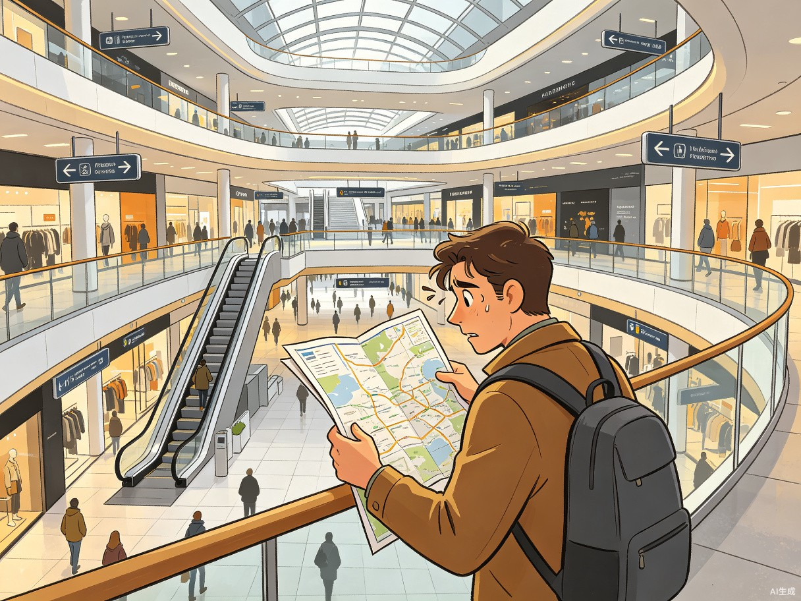
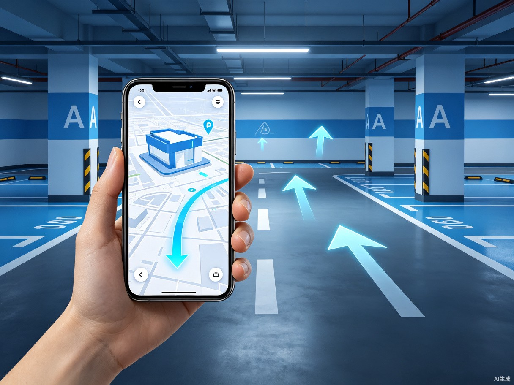

大型复杂空间实景导航
拍照识别位置 · 三维实景确认 · AR路径指引
针对大型公共枢纽、复杂商场及地形复杂城市区域，通过拍照识别与AR技术， 帮助用户在普通地图无法精准定位的场景下，快速确认自身位置并获取便捷导航。
大型复杂空间中的迷路困境
在大型交通枢纽、内嵌地铁的商业综合体、地形复杂的城市区域， 普通地图无法帮用户精准确认自身位置。 卫星信号在室内延迟或失效，楼层信息缺失，导向标识复杂难懂。


用视觉识别+AR打破空间迷局
一款基于拍照识别位置、搭载三维实景告知位置， 并根据用户需求提供导航的手机端应用/功能模块。 用户只需拍摄环境照片，系统即可计算精确定位，并通过AR叠加路径指引。
四步完成从定位到导航的完整体验
flowchart LR
A["📍 位置定位
选择所在大型空间"] --> B["📸 拍照识别
拍摄2-4张环境照片"]
B --> C{"🎯 位置确认
系统计算匹配度"}
C -->|相似场景| D["📝 补充拍摄
按提示拍摄特征码"]
C -->|精准匹配| E["🗺️ 三维展示
确认环境模型"]
D --> E
E --> F["📌 选择目的地
推荐或自定义目标"]
F --> G["🧭 路径规划
计算最优路线"]
G --> H["✨ AR实景导航
叠加路径指引"]
用户拍摄2-4张周围环境照片，系统通过视觉特征匹配算法计算用户所在的精确位置。若场景相似，提示用户补充拍摄特征标识。
手机展示用户所在区域的三维模型，让用户直观比对确认"这里是否就是我所在的位置"，消除定位不确定性。
系统推荐常用目的地，或用户自主输入目标，智能计算包含扶梯、楼梯上下楼的最优路径，大幅节省找路时间。
通过手机摄像头画面实时叠加AR路径箭头与指引标识，将虚拟导航信息与现实场景无缝融合，直觉化指引方向。
精准覆盖在复杂空间中迷失方向的核心人群
方向感较弱，即使在熟悉环境也容易迷路。普通地图无法帮助他们建立"我在哪"的空间认知，急需直观的实景指引。
赶飞机、赶高铁、赶会议，时间紧迫。走错一次路可能导致行程延误，需要能够秒级确认位置并快速给出最短路径。
不愿意开口向陌生人问路，宁可自己反复绕路。一款"不用开口"的自助导航工具，完美契合其心理需求。
第一次前往陌生的大型枢纽，对整体布局毫无概念。传统地图的抽象表示难以与实际环境对应，实景导航降低认知门槛。
商业价值与效率提升的双重收获
可与地图厂商（高德、百度、腾讯地图）合作提供增值服务，开辟B2B合作新模式。也可与大型枢纽管理方合作，作为官方导航工具嵌入其服务体系。
现有导航产品均未考虑"不愿开口问路"这一情感需求。本方案精准填补市场空白，满足数亿i人群体的隐性刚需。
帮助用户在30秒内确认当前位置，获取包含扶梯上下楼在内的详细导航步骤。相比传统找路方式，平均节省60%以上的寻路时间。
从交通枢纽延伸至大型商场、会展中心、地下商业街、医院、大学校园等所有复杂室内空间，市场空间广阔。
以上海虹桥枢纽为例，展示完整使用链路
上海虹桥枢纽集高铁、机场、地铁、公交、停车于一体，总面积超过130万平方米， 日均客流量超50万人次，是典型的大型复杂公共空间。
用户打开应用，选择"上海虹桥枢纽"，系统自动加载该空间的完整三维地图数据。
用户在P6停车场B2层拍摄柱面楼层代码"B2-A区"及周围车位编号照片。
系统展示P6停车场B2层三维模型，用户旋转比对确认"对，我就在这里"。
系统推荐"T2航站楼出发层""高铁站出发层"等常见目的地，用户一键选择。
系统计算最优路径：乘电梯至B1 → 步行连廊 → 扶梯上T2出发层，全程预计8分钟。
举起手机，AR箭头直接叠加在真实画面上：前方右转、乘电梯上楼、沿连廊直行...
大型复杂空间实景导航，通过拍照识别、三维确认、AR指引三大核心能力， 解决用户在交通枢纽、大型商场等场景中的迷路痛点。 无需问路，不用猜测，举起手机，即刻出发。